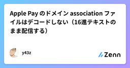
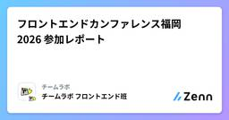
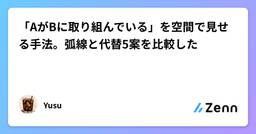
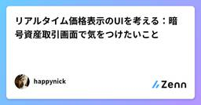
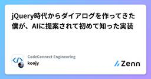
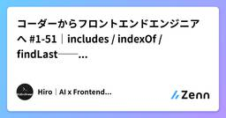
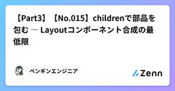

Zennの「frontend」のフィード
フィード

ページ内リンクが別ページへ飛ぶ — 犯人は自分が書いていない base タグだった
Zennの「frontend」のフィード
社内向けのHTMLレポート一覧ページに、見出しへ飛ぶ目次リンクを足した。手元でHTMLを開くと問題なく動く。ところが実際の閲覧経路で開くと、リンクを押した瞬間にエラー画面へ飛ばされた。原因は自分が書いていない <base href> タグだった。同じ踏み方をしないように、仕組みと確認手順、直し方を残しておく。 症状の見分け方ページ内リンクは普通こう書く。<a href="#install">インストール</a>...<h2 id="install">インストール</h2>期待する動きは「同じページ内の見出しまでス...
15時間前

Apple Pay のドメイン association ファイルはデコードしない（16進テキストのまま配信する）
Zennの「frontend」のフィード
短編です。Web で Apple Pay を使うには、ドメインの所有を Apple に検証してもらう必要があります。決済代行（PSP）から渡されるファイルを、自分のサイトの決まった場所に置くだけ——のはずが、1 回失敗しました。原因は、ファイルの中身を「親切に」変換してしまったことです。 何を置くのか配置先はこれです。public/.well-known/apple-developer-merchantid-domain-association拡張子はありません。https://<あなたのドメイン>/.well-known/apple-developer-merc...
2日前

X・Threads・Instagram・noteの文字数ルールを比較して、簡易カウントロジックを書いてみた
Zennの「frontend」のフィード
はじめにSNSやnoteに投稿するとき、「あと何文字まで書けるか」を意識した経験は多いと思います。ただ、この「文字数ルール」はプラットフォームごとにかなり性質が違います。単純な文字数カウントで済むものもあれば、文字の種類によって重み付けが変わるものもあります。この記事では、X・Threads・Instagram・noteの4つについて、実際にどういうルールになっているかを整理し、実装のイメージをつかむために簡易的な文字数カウントロジックを自分で書いてみました。 4つのプラットフォームのルールを整理する X: 文字の種類によって重みが変わるXは「全ての文字を1文字として数...
2日前

フロントエンドカンファレンス福岡 2026 参加レポート
Zennの「frontend」のフィード
こんにちは！チームラボ フロントエンド班の安藤です！2026年9月12日に九州産業大学にて開催された「フロントエンドカンファレンス福岡 2026」に現地参加してきました！今回のフロントエンドカンファレンス福岡は、実に7年ぶりの開催となりました。チームラボはゴールドスポンサーとして協賛し、スポンサーブースの出展も行いました。本記事では、当日の会場の様子やセッションをレポートとしてお届けします！ フロントエンドカンファレンス福岡 2026 とは「フロントエンドカンファレンス福岡 2026（FEC Fukuoka 2026）」は、ウェブのフロントエンド技術にフォーカスした技術カン...
2日前

「AがBに取り組んでいる」を空間で見せる手法。弧線と代替5案を比較した
Zennの「frontend」のフィード
「誰がどのプロジェクトに取り組んでいるか」をオフィス風の画面で見せるために、自席から現場区画へ光の弧を架けました。5人同時で5本が絡まり、先例と研究を当たり直して弧は廃止しました。この記事は、そのときの判断材料（先例3つ・可視化研究3本・代替5案）と、最終的に選んだ構成、そして戻さないための番人テストを書きます。 前提作っているのは、Claude Code のスキル・エージェントの稼働ログを「社員がオフィスで働く様子」として可視化する社内ツールです。制約は次のとおりです。CSS / DOM のみ。WebGL 不可、npm / CDN 禁止毎フレーム動かしてよいのは trans...
3日前

画像編集UIで「視点」と「人物」を別の変更軸として扱う
Zennの「frontend」のフィード
画像編集UIで「視点」と「人物」を別の変更軸として扱うこの記事は PhotoGenerator AI の公開UIの観察から考えた設計メモです。内部API、モデル構成、処理時間、品質ベンチマークを確認したものではありません。 変更対象を最初に分ける画像編集の「修正」には、少なくとも二つの種類があります。カメラ位置やレンズ感を変えて、同じ主役を別の見え方にする変更。もう一つは、構図や光を保ちながら、登場する人物の顔を置き換える変更です。PhotoGenerator AIの Camera Angle Control を設計材料にすると、入力とレビュー基準を分ける理由が見えます...
3日前

Chromeの翻訳でフォームの送信値が英語になる ── optionのvalue省略が原因
Zennの「frontend」のフィード
はじめに日本語のフォームを、外国の方がブラウザの翻訳機能で英語にして使うと、こうなることがあります。送信される値が、翻訳後の英語になる（"会場で参加" のはずが "Attend at the venue" で届く）JavaScript が RangeError: Maximum call stack size exceeded で止まり、条件付きで出るはずの設問が出てこない2026年9月に、PC 版 Chrome と iPhone の Chrome（どちらもバージョン 153）で、実際に起きることを確認しました。原因は、<option> の value ...
3日前

Scandit Web SDK の Error 1025 と「映像が黒いまま」: エンジンは使い回し、ビューは毎回作る
Zennの「frontend」のフィード
タブレットのカメラでバーコードを読む画面を、Scandit Web SDK で作りました。単体の画面では問題なく動きます。ところが業務で使い始めると、2 つの不具合が出ました。画面を行き来していると、ある時点から Error 1025: The data capture context has been disposed で読めなくなる別の画面から戻ってくると、カメラの映像が黒いまま表示されない（読み取り自体は動いていることもある）原因は別々ですが、どちらも「SDK のオブジェクトを、React のコンポーネントの寿命に合わせて作ったり壊したりしていた」ことに起因します。結論は...
3日前

リアルタイム価格表示のUIを考える：暗号資産取引画面で気をつけたいこと
Zennの「frontend」のフィード
はじめに暗号資産取引画面を作るとき、価格をリアルタイムに表示するだけなら簡単そうに見えます。しかし実際には、更新頻度が高くなるほどUI側で考えることが増えます。価格更新のたびに画面全体を再描画しないユーザーが見ている値を急に見失わないようにする上昇・下落の変化を視覚的に伝えるWebSocket切断時の状態を明確にする古い価格を「最新」と誤認させない今回は、取引系UIを考えるときに気になったポイントを簡単に整理します。 価格更新と再描画リアルタイムデータを扱う場合、価格が更新されるたびに大量のコンポーネントを再描画すると、画面が重くなります。そのため、価格...
3日前

React 以外の選択肢を地図にする — htmx 4.0 時代の HTML over the wire 全 3 系統 1
1
Zennの「frontend」のフィード
はじめに2026 年 8 月 28 日に htmx 4.0.0 がリリースされました。Hacker News のスレッドは 830 ポイント・252 コメントに達し、「サーバーが HTML をそのまま返す」設計が改めて注目を集めています。一方で、この分野には htmx のほかにも Turbo、Datastar、Unpoly、LiveView、Livewire、Inertia……と名前ばかりが並び、「どれが何と競合していて、どれが併用できるのか」が整理されていないまま語られがちです。この記事では、これらを 3 つの系統 に分けて地図を描きます。各ライブラリの数字は、執筆日（202...
3日前

動画の背景を透明にする方法｜MP4・WebMの違いと黒くなる原因
Zennの「frontend」のフィード
動画の背景を透明にしたいときは、背景を消す処理、透明度を残す書き出し、透明度を表示できる再生環境を分けて考えると、失敗した場所を見つけやすくなります。一般的なH.264のMP4は透過素材の保存には向きません。Webページに重ねるならアルファ付きWebMが候補になりますが、WebMという拡張子だけで透明になるわけではありません。この記事では、動画の背景透過をこれから行う人と、「透過で書き出したはずなのに黒くなる」と困っているWeb制作者に向けて、形式の選び方とHTMLでの確認方法をまとめます。 動画の背景透過は3つの工程に分ける透明度の情報は、アルファチャンネルと呼ばれます。完全...
3日前

ウェルスナビとマークアップ：数字の入力とtype="number"について
Zennの「frontend」のフィード
この記事はウェルスナビ 2026年9月テックブログ企画「【UI/UX特集】画面の向こうのユーザーのためにできること」の特集記事です。こんにちは。サービス機能開発チームでフロントエンドエンジニアをしている長谷川です。ウェルスナビのサービス画面には、入金や出金、積立額の金額、口座番号、クレジットカード番号、積立運用シミュレーションなど、数字を入力させるUIが数多くあります。クイック入金画面出金画面数字を入力させるUIを実装したいとき、まず思い浮かぶのは input type="number" だと思います。いかにも数字入力のためのtype属性に見えます...
4日前

jQuery時代からダイアログを作ってきた僕が、AIに提案されて初めて知った実装
Zennの「frontend」のフィード
こんにちは、コードコネクトの村上（@koojy3）です。jQuery時代、ダイアログといえば、用意しておいたモーダルを出すか、器にコンテンツを流し込んで表示するか、でしたよね。当時はみんなこんな風に実装してたと思うんです。僕はエンジニアを20年ほどやってますが、それがずっと固定観念で残ってました。Xの投稿画面、URLを変えて表示してますよね？正直、あの実装方法を知らなかったです。AIに提案されて初めて知りました。 この記事のポイントダイアログとURLについて、僕が思い込んでいたことと、今どうしているかです。ダイアログは、用意した器にコンテンツを流し込んで出すものだと20年ほ...
4日前

コーダーからフロントエンドエンジニアへ #1-51｜includes / indexOf / findLast──「あるか」を調べる
Zennの「frontend」のフィード
はじめに前回（#1-50）は find / findIndex で「条件に合う最初の1件」を取り出しました。今回はその一歩手前にある、もっと素朴な問いを扱います。その値、そもそも配列に入っていますか？一覧から1件を取り出す前に、「あるか・ないか」だけ知りたい場面は驚くほど多いです。タグが選択済みかどうか、権限を持っているかどうか、すでにカートに入っているかどうか。こうした判定を、昔は indexOf(値) !== -1 という少し回りくどい書き方でやっていました。今は includes 一発で書けます。さらに今回は、配列を後ろから探す findLast / findLa...
4日前

Frontend Conference Fukuoka 2026で学んだこと
Zennの「frontend」のフィード
はじめにFrontend Conference Fukuoka 2026に参加しました。学びを忘れないように、印象に残った内容を記録します。 杜甫々が語るフロントエンド開発技術の歴史と今後杜甫々さんが、Web技術の変化を振り返るセッションでした。JavaScript・HTML・CSSなどの歴史や、「とほほのWWW入門」についての話もあり、長い期間Webの変化を見てきた人ならではの内容だったと感じました。多少ルーズでもシンプルなものは普及しやすく、反対に厳格で理想を求めすぎたものは、普及するまでに時間がかかるという話が印象に残りました。また、「広まらなければゴミ」という...
4日前

【Part3】【No.015】childrenで部品を包む ― Layoutコンポーネント合成の最低限
Zennの「frontend」のフィード
みなさん、こんにちは！ペンギンエンジニアです！前回の014で、Propsの型に?を足して省略を許可し既定値で表示まで決めましたが、014までのPropsは属性に書ける「値」を渡す仕組みでした。予告どおり、今日は部品をタグで挟んで中身ごと渡す話 ― childrenをやります。childrenは特別な仕組みに見えますが、種明かしをすると、これもただのpropです。012「ただの関数」、013「ただの引数」に続けて、今日は「childrenはただのprop」で締めくくります。筆者はSES現場の保守案件で、同じ枠のコピペが画面ごとに散らばり全画面を直した経験があり、今日作るCard...
5日前

v0 で個人開発のUIを量産した──実際に使った10の実装パターンとプロンプト例
Zennの「frontend」のフィード
v0 by Vercel を使い始めて3ヶ月、個人開発で実際に「何度も使う」パターンが固まってきた。この記事ではプロンプトをそのまま使える10種類の実装パターンを整理する。難度の目安入門：プロンプト1〜2回で完成、Freeプランで余裕実践：3〜5回の反復、Teamプラン向き応用：複数画面・状態管理・外部API込み、Cursor / Claude Codeとの併用推奨 パターン1：ヒーローセクション付きLP（入門）最頻出。サービス紹介・個人開発のリリース告知に。ヒーローセクション付きランディングページ。- 上部にタイトル「AI Maker Lab」と1行サブタイトル...
5日前

htmx4はhtmx2のアプリの何を壊すのか
Zennの「frontend」のフィード
2026年8月28日にhtmx 4.0.0が公開されました。CodeZineのニュースにもあるとおり、公式は「ユーザーから見ると2系とほぼ同じ」と説明しています。本当にそうなのかを、自分で書いたhtmx2のアプリを4.0.0へ上げて確かめてみました。題材はSlackの骨格は何か - チャットと連携ハブをGoとhtmxで再実装するで作ったチャットアプリです。WebSocketでHTMLの断片を配信し、hx-swap-oobで画面に差し込み、送信フォームでは冪等キーを採番しています。htmx4での改修項目にぴったり一致しているので、題材として非常に適合する構成になっています。公開時点のアプ...
5日前

NEXT_PUBLIC_* を更新したのに古いキーが動き続ける（ビルド時に焼き込まれる）
Zennの「frontend」のフィード
外部 SDK のライセンスキーに失効日が設定されていて、期限までに新しいキーへ入れ替える必要がありました。環境変数を更新して、動作確認して、大丈夫だと思ったら、本番はまだ古いキーで動いていました。NEXT_PUBLIC_* の性質を分かっていなかったのが原因です。同じところで 2 回はまったので、書いておきます。 何が起きたか構成はこうです。Next.js のアプリが 3 つ。ブラウザ側で動く SDK のライセンスキーを共用しているキーは NEXT_PUBLIC_SDK_LICENSE_KEY として、各アプリの環境変数に入っているホスティングは Vercelキーの失...
5日前

フロントエンドの仕様と実装を同じ言葉で書く ― 責務を機械的に突合し検証し続けるフロントエンド開発（要件定義〜実装・テスト） 2
Zennの「frontend」のフィード
!3行まとめこれまで別記事でフロントエンドコンポーネントの責務をSubject Object Verbで整理して名付けるといいよという話をしてきました。この記事では、同じ語彙を要件定義から使うと、同じ語彙で一貫して開発ができ、要件の検討漏れや実装の抜け漏れが少なくなるという提案をしています。ymlやアノテーションを活用することで、静的に解析ができ、CIでのチェックやAIの品質ゲートにもできて嬉しいよ、と主張していますフロントエンドの仕様書と実装コードは、ふつう別の言葉で書かれています。つまり仕様は日本語のExcelやドキュメントで、実装はコードになっています。だから両者の...
5日前